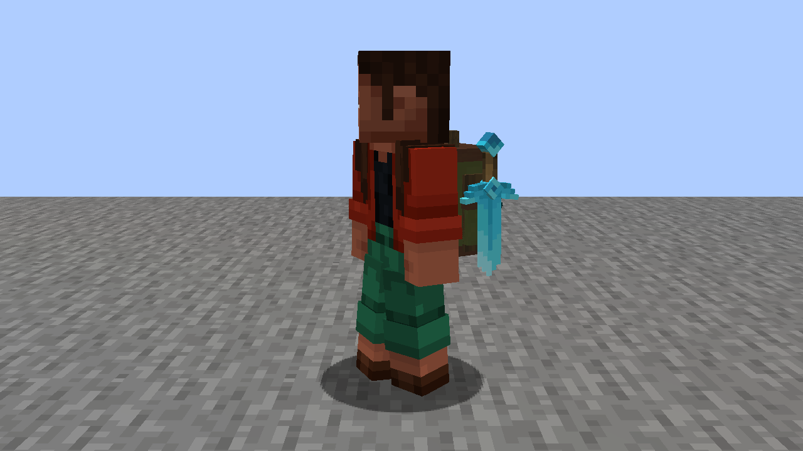
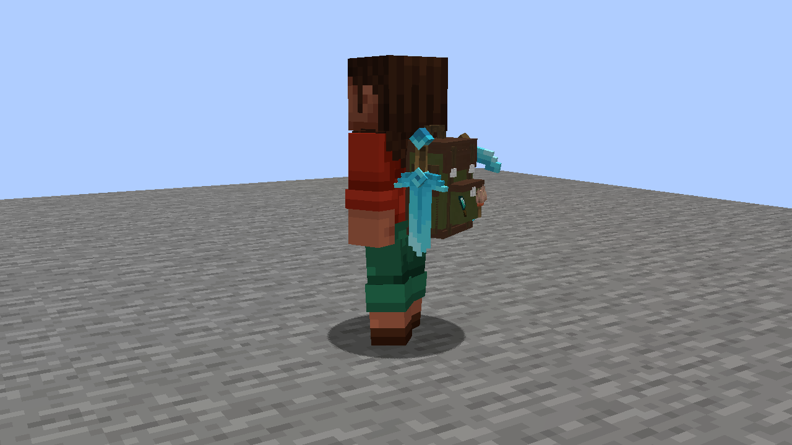
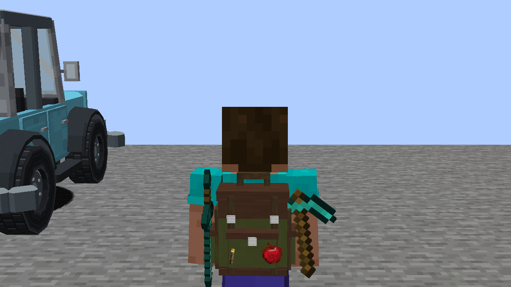

Backpacks+ / Actual in-game comparison
Gear fitted to the bag.
Swords hang grip-up, with their flat face against the bag’s side. Pickaxe heads run along the side, instead of spreading across the arm. The approved item scale is unchanged.
The sword has no outward lean. Its side clearance uses the measured model thickness; the pickaxe is turned around its handle.

Sword side view · straight and close to the pack

Rear quarter view · brush and Farmer’s Delight knife
Same selected items with vanilla models

Watch the refreshed draw, stow, open and carry clips →